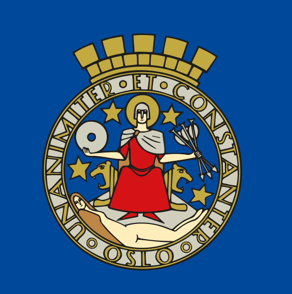

Bienvenue sur notre site consacré à Oslo.

Oslo est la capitale d'État de la Norvège. La ville s'est appelée Christiania de 1624 à 1924, selon l'ancienne graphie latine héritée du danois, ou communément Kristiania en dano-norvégien. Le 1er janvier 1925, elle a officiellement repris le nom d'un modeste faubourg, site historique de la première ville, fondée au fond de l'Oslofjord par Harald III et promue capitale royale sous Håkon V. La ville d'Oslo compte en 2020 une population de plus de 690 000 habitants, dont 25,6 % d'immigrants. La région du Grand Oslo a pour sa part une population totale de 1 546 706 habitants en 2020. La capitale regroupe ainsi 12,9 % de la population norvégienne et constitue tant une kommune qu'un fylke (comté), regroupant quinze bydeler (arrondissements), s'étendant largement autour du fjord d'Oslo et vers le nord-est. Il n'y a pas de gentilé d'usage générique dans la langue norvégienne pour les habitants et originaires d'Oslo (sur le modèle de Tokyo, on parle parfois d'Osloïtes en français, voire très récemment d'Osloviens). En norvégien, le terme admis est Osloborger, dont la traduction littérale en français est «citoyen d'Oslo ». La commune s'étend sur 450 km2 et possède de grands parcs ainsi que des pistes de ski de fond. Important nœud de communication ferroviaire et portuaire, la ville est desservie par un réseau routier et autoroutier dense et de nombreux trains de banlieue.
Dans ce site, vous trouvez diverses informations contenant
- Géographie
- Histoire
- Culture
- Galerie
- Contact
- Liens